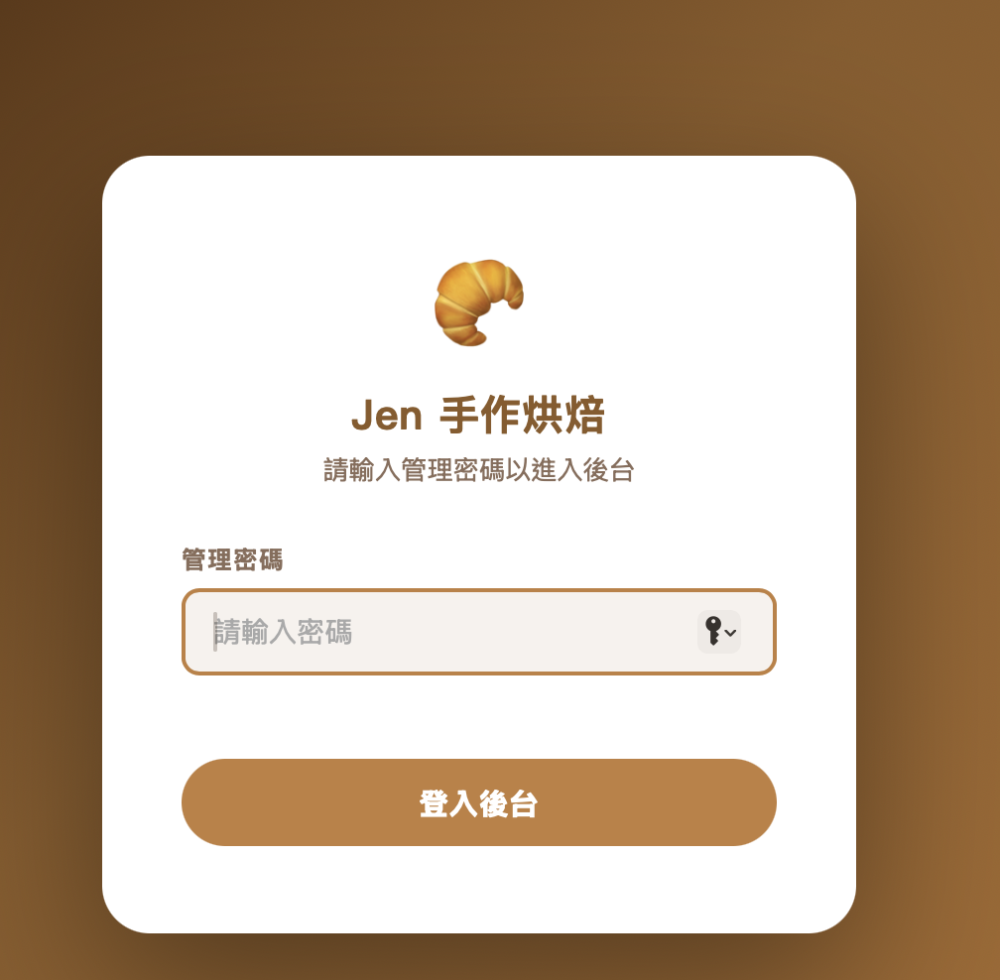
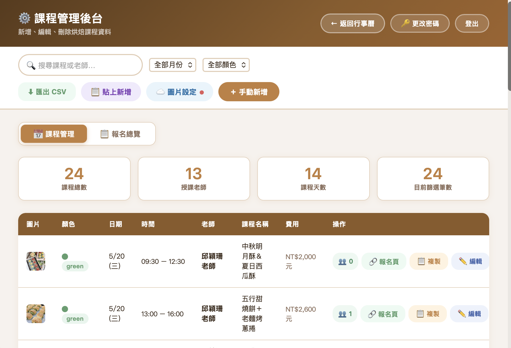
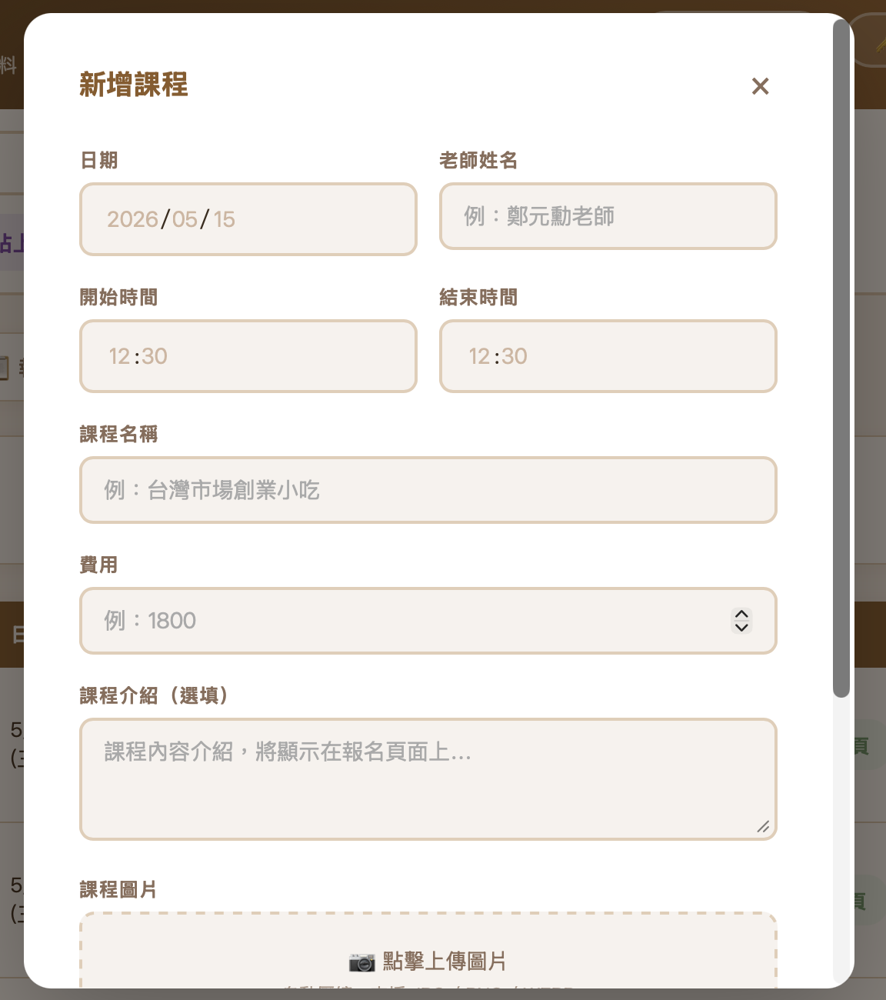
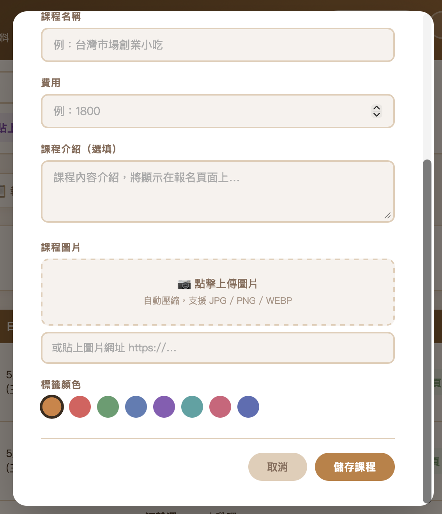
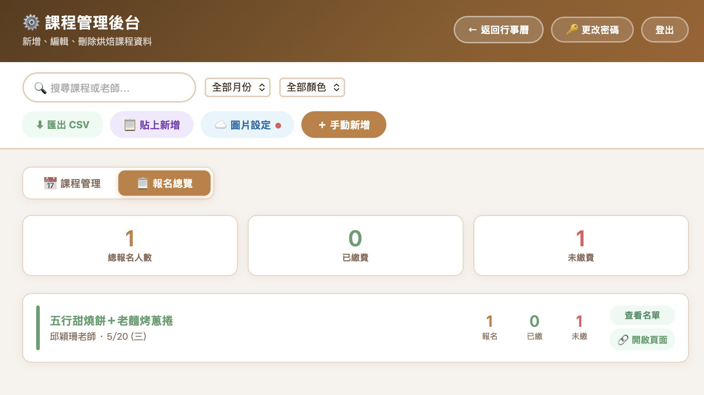
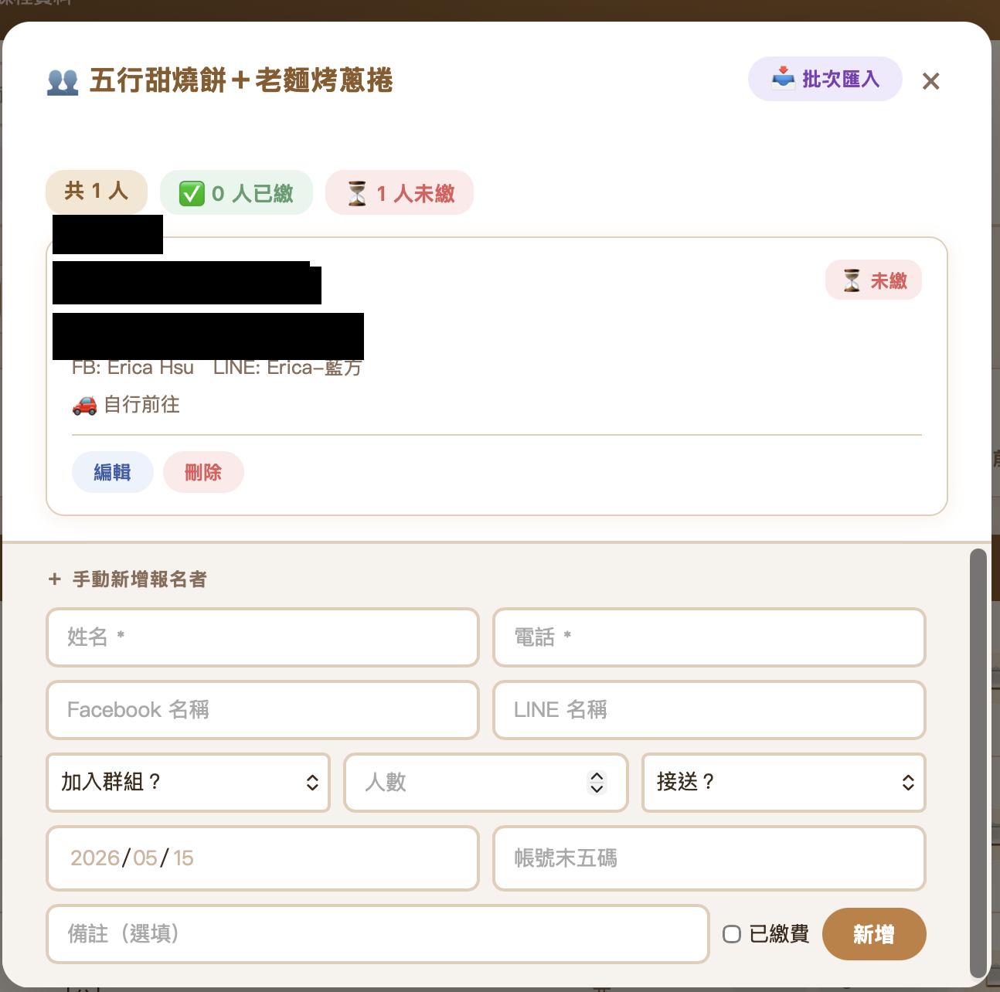
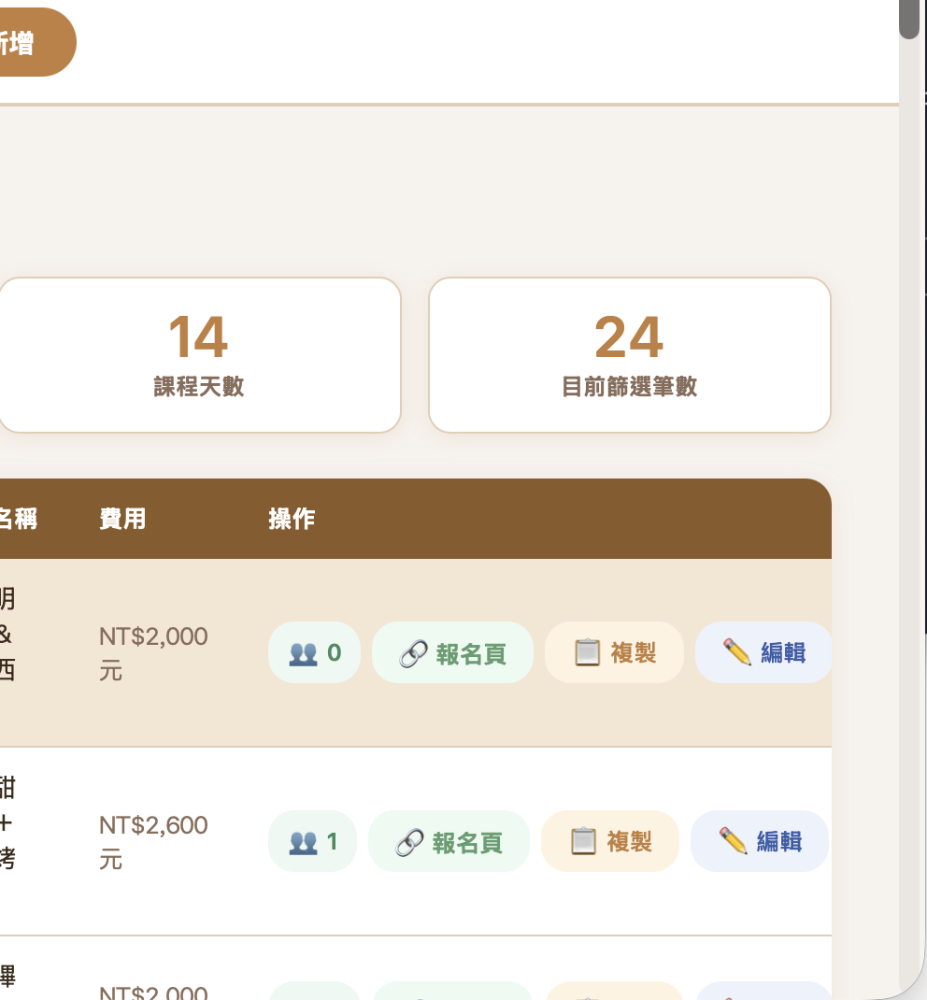
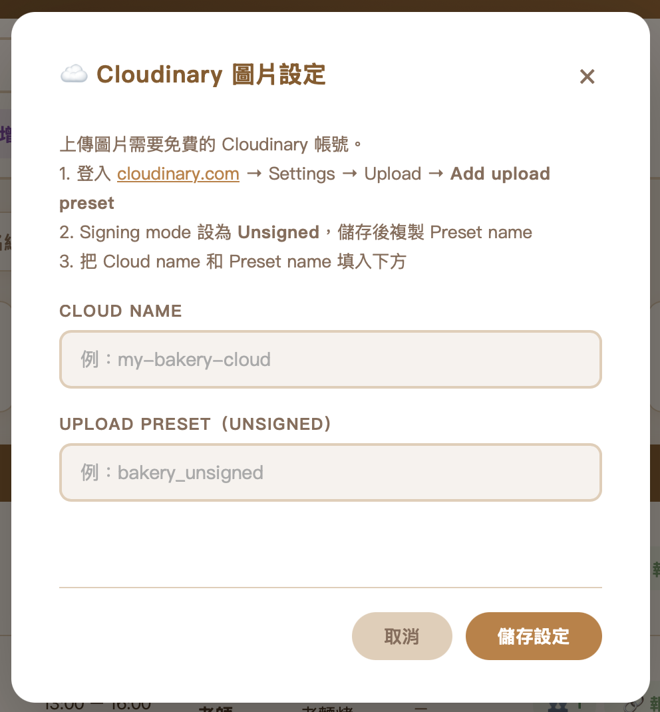
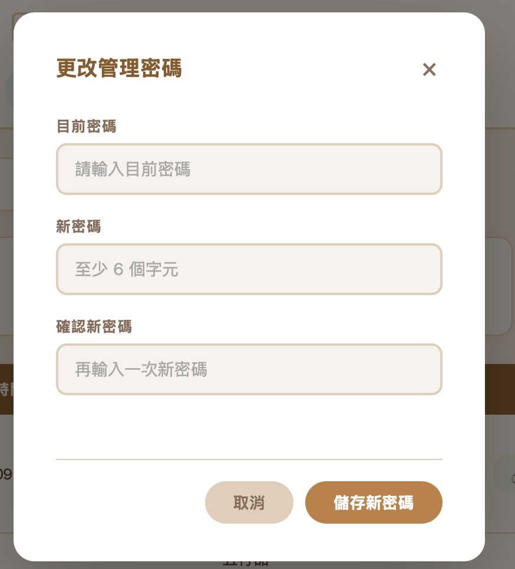

登入後台
用瀏覽器開啟網址：bakery.urland.com.tw/admin.html
輸入管理密碼
按 登入後台

課程管理
登入後會看到課程管理主畫面，上方顯示課程總數、授課老師數等統計資訊。

新增課程
點右上角橘色的 ＋ 手動新增 按鈕
填入課程資料（見下表）
點 儲存課程，系統自動產生報名連結


| 欄位 | 說明 |
|---|---|
| 日期 | 選擇課程日期 |
| 老師姓名 | 例如「邱穎珊老師」 |
| 開始／結束時間 | 例如 09:30 / 12:30 |
| 課程名稱 | 會顯示在行事曆和報名頁面 |
| 費用 | 只輸入數字，例如 1800 |
| 課程介紹 | 選填，會顯示在報名頁面 |
| 課程圖片 | 點虛線框上傳，或貼入圖片網址 |
| 標籤顏色 | 點選圓圈，用來區分不同類型課程 |
編輯課程
在課程列表找到要修改的課程，點 ✏️ 編輯 按鈕，修改完成後點 儲存課程。
刪除課程
點課程右側的 刪除 按鈕，確認後即刪除。
搜尋與篩選
左上搜尋框可依課程名稱或老師名稱搜尋，也可依月份或標籤顏色篩選。
↑ 回到頂部報名管理
點上方 📋 報名總覽 切換頁面
可以看到所有課程的總報名人數、已繳費、未繳費 統計
點右側 查看名單 進入該課程的報名者列表


標記繳費狀態
點卡片右上角的 ⏳ 未繳 即可切換為 ✅ 已繳，再點一次可切換回來。
手動新增報名者
在查看名單視窗下方有「＋ 手動新增報名者」表單，填入姓名、電話等資料後點 新增。
批次匯入名單
點視窗右上角 📥 批次匯入
從 Google 試算表複製資料貼入，或直接輸入（每行一人，用空格或逗號分隔姓名、電話、備註）
確認預覽後點 匯入
複製報名連結
每堂課右側有幾個操作按鈕：

| 按鈕 | 功能 |
|---|---|
| 👥 數字 | 查看該課程報名人數，點擊進入名單 |
| 🔗 報名頁 | 開啟報名頁面（可分享給學員） |
| 📋 複製 | 複製完整課程資訊＋報名連結 |
| ✏️ 編輯 | 編輯課程內容 |
點 📋 複製 後，剪貼簿的內容可以直接貼到 LINE 群組或 Facebook：
圖片設定
課程圖片透過 Cloudinary 上傳。第一次使用前需要先完成設定，設定好之後就不需要再動。

點上方工具列的 ☁️ 圖片設定
依照視窗內的說明，登入 Cloudinary 取得 Cloud Name 和 Upload Preset
填入後點 儲存設定
按鈕旁的圓點變成綠色 🟢 表示設定成功
修改密碼

點右上角 🔑 更改密碼
輸入目前密碼
輸入新密碼（至少 6 個字元）
再次輸入新密碼確認
點 儲存新密碼